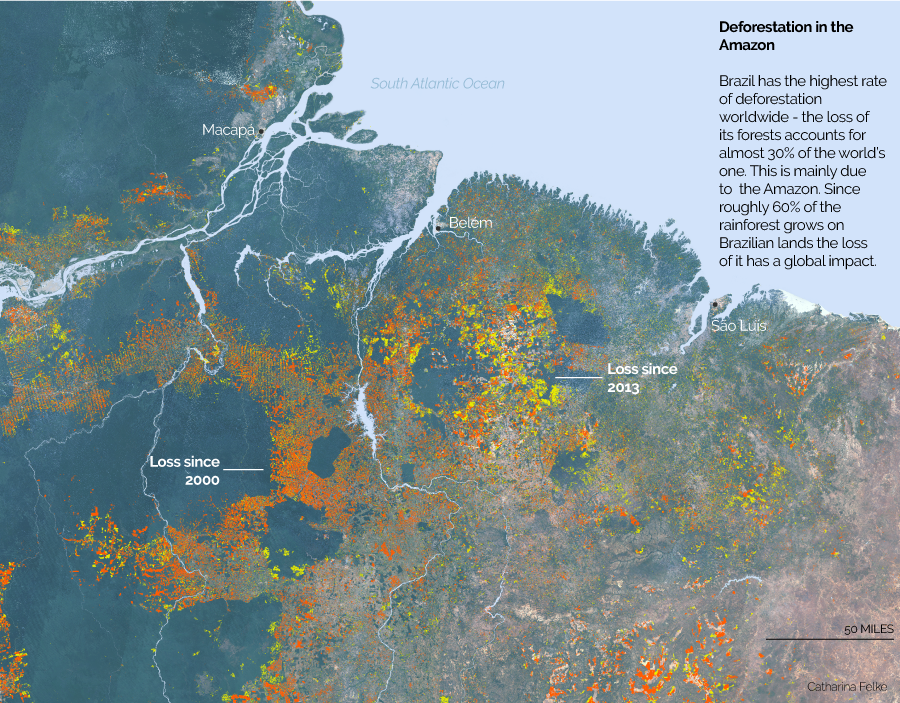

Mapping deforestation in the Amazon
Using Google Earth Engine, QGIS, Adobe Photoshop and Illustrator to show the loss of forests. This map was created during the Lede Program for ‘GIS for Data Analysis’ with Jeremy White, NYT.
Data source: Global Forest Change Data, Hansen et. al.